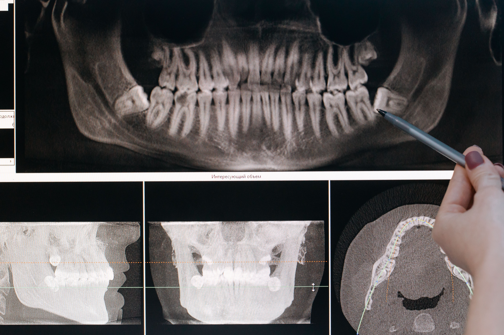
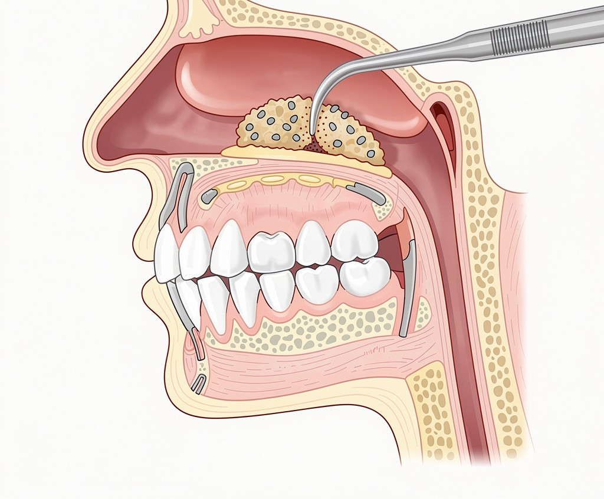
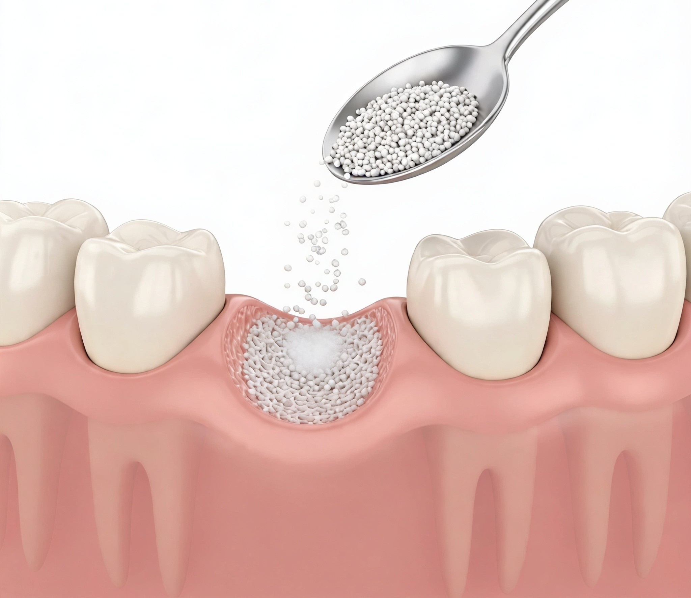
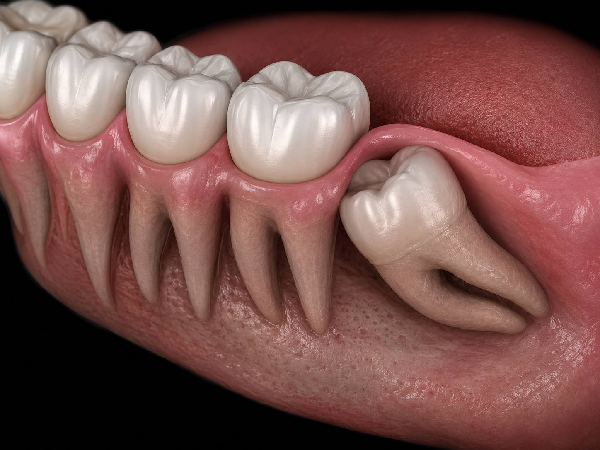

Oral, dental, and maxillofacial surgery is a dental specialty encompassing the diagnosis and treatment of surgical procedures involving the teeth, jawbones, and oral tissues. Impacted tooth extractions, surgical procedures involving the jawbone, the management of cysts, and similar intraoral surgeries fall within this scope. The objective is to maintain oral health, resolve functional issues, and safely perform advanced surgical treatments when necessary.
It can be performed on patients with impacted teeth, issues involving the jawbone, or oral and dental problems requiring surgical intervention. The specific procedure required is determined by a specialist following a clinical examination and radiological assessment.
Since surgical procedures are performed under local anesthesia, no pain is felt during the procedure. Any mild pain, swelling, or tenderness that may occur afterwards is generally temporary and can be managed with medications recommended by the physician. Adhering to proper care routines and recommendations supports a positive recovery process.
The recovery period may vary depending on the type of surgical procedure performed and the individual's general health. While most patients are able to return to their daily activities within the first few days, complete tissue healing may take longer. Adhering to the care recommendations provided by the physician contributes to a healthy recovery process.

Sinus lifting is a surgical procedure performed when the bone height in the back area of the upper jaw is insufficient for implant treatment. During this procedure, the sinus floor is controlledly elevated and bone graft is placed in the created area. The goal is to create adequate bone support for implant placement and improve the long-term success of the treatment.
The sinus lift procedure can be performed on patients who lack sufficient bone volume in the posterior upper jaw for implant treatment. It is particularly recommended for individuals who experienced tooth loss some time ago or whose bone height has diminished due to the sinus cavity. A specialist determines the suitability of the treatment following a clinical examination and a three-dimensional radiological assessment.
The sinus lift procedure is performed under local anesthesia, so pain is not felt during the procedure. Mild pain, swelling, or sensitivity that may occur after the procedure are usually temporary and can be controlled with medications prescribed by the physician. Regular care and adherence to recommendations support the healing process.
The recovery process following a sinus lift procedure is generally rapid. Mild swelling and tenderness may occur during the first few days after the procedure. These symptoms can be managed with medications recommended by the physician. Proper care and adherence to recommendations support the healing process.

Bone grafting is a surgical procedure performed to restore areas of the jawbone that have insufficient volume or density. During the procedure, missing bone tissue is supported with special graft materials to stimulate new bone formation. It is particularly important in implant treatment, as it helps create adequate bone support before the implant placement.
Bone grafting can be performed on patients who have experienced jawbone resorption due to tooth loss, lack sufficient bone volume for implant treatment, or require enhanced bone support. The suitability of the treatment is determined by a specialist following a detailed clinical examination and radiological assessment.
Bone grafting is performed under local anesthesia, so no pain is felt during the procedure. The mild pain, swelling, or sensitivity that may occur after the procedure are usually temporary and can be controlled with medications prescribed by the physician. Following the physician's recommendations contributes to a more comfortable healing process.
The healing process can vary depending on the area treated and the individual's overall health. Mild swelling and sensitivity may be experienced in the initial days. The integration of the transplanted graft material with the jawbone requires a certain period. Regular check-ups and adherence to the physician's recommendations support a successful healing process.

Buried tooth extraction is a surgical procedure performed when a tooth is completely or partially retained under the jawbone or gum tissue. This condition, most commonly seen in wisdom teeth, can cause pain, infection, gum problems, or pose a risk of damage to adjacent teeth. Timely evaluation and extraction of buried teeth help maintain oral and dental health.
Buried tooth extraction can be applied in patients experiencing pain, infection, gum problems, jawbone damage, or pressure on adjacent teeth due to the presence of a buried tooth. The need for treatment is determined by an oral and maxillofacial surgery specialist based on clinical examination and radiological evaluation.
Since the procedure is performed under local anesthesia, no pain is felt during the extraction. Any mild pain, swelling, or sensitivity that may occur after the procedure is usually temporary and can be controlled with medications prescribed by the doctor. Following the recommended care instructions contributes to a more comfortable recovery process.
While not all buried teeth require extraction, certain conditions can lead to pain, infection, gum problems, cyst formation, or damage to adjacent teeth if left untreated. The need for extraction is determined by an oral and maxillofacial surgery specialist based on clinical evaluation and radiological assessment.

Learn about our treatment processes and available appointment times by contacting us.
You can contact us for questions or appointment requests.
Monday - Saturday
10:00 - 19:00Sunday
Closed